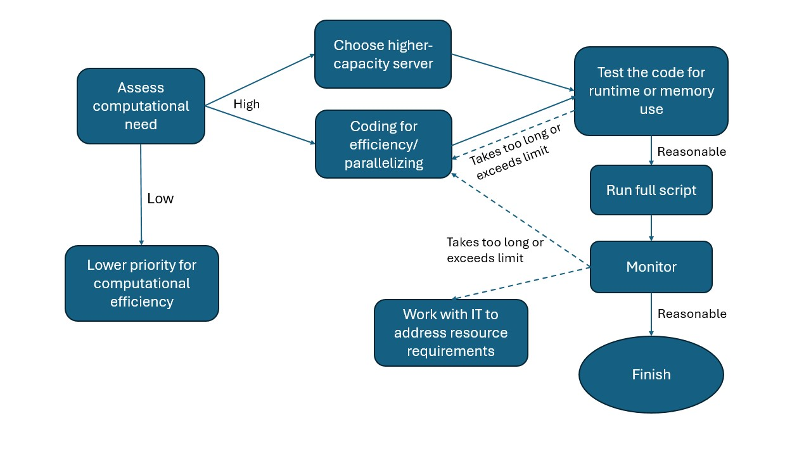

Computational Efficiency
Projects at RFF increasingly rely on large datasets and computationally intensive models. As a result, the performance of analysis code may be constrained by available computing resources. Inefficient workflows can take hours or days to run, consume excessive memory, or fail altogether. In this section, we provide guidance on diagnosing and improving computational efficiency, broadly referring to how effectively code uses available resources. These resources primarily include time (how long a task takes to run) and memory (how much data can be processed at once).
In this context, memory refers to the computer’s Random Access Memory (RAM). RAM is a fast workspace where data and program objects are stored while code is executing. This is fundamentally different from disk storage (such as hard drives or SSDs), which is designed for long-term storage. Because read and write operations to RAM are orders of magnitude faster than those to disk, most statistical computing environments—including R and Python—load data into memory before performing computations. Therefore, available physical memory plays an important role in determining the size of datasets and intermediate objects that can be processed efficiently. When memory limits are exceeded, performance may degrade sharply or the session may fail altogether.
1 General practices
The need to manage computational efficiency differs by project and should be approached on a case-by-case basis. Not all projects require fully optimizing the computational efficiency of the code. The figure here organizes a set of general practices in a flow chart to help researchers decide on next steps.

Assess computational need against capacity.
Many analyses can be anticipated to stretch available computational resources. In such cases, pay special attention to managing computational efficiency from the start.Choose a server computer based on capacity needs.
RFF’s server computers differ in CPU and memory capacity (see here for a list of server computers). Choose a machine appropriate to the expected workload. Before running any analysis, check Task Manager to ensure that active sessions from other users leave sufficient capacity for your tasks.Test the code for correctness and efficiency before full implementation.
Before running the full analysis, test the code on a small subset of the data. This helps estimate expected runtime and identify potential errors early, preventing wasted time on long re-runs.Monitor the computational process.
Monitor resource usage during execution to determine whether revisions are needed to improve efficiency or avoid exceeding the machine’s capacity.Revise code to improve efficiency.
Strategies may include using functions and loops to reduce memory usage, or implementing parallel processing when tasks involve many identical subtasks. The specific revisions will depend on the programming language and packages used. We provide more specific suggestions for programming in R below.Coordinate with the IT team if needed.
If none of the above solutions suffice, the IT team can assist in configuring computational resources to meet the analysis needs.
2 R coding practices for efficiency
Below we outline a set of recommended practices for improving R code efficiency. With the exception of parallel computing, these are best treated as default habits during development, rather than techniques reserved for when performance problems emerge.
2.1 Use vectorization over loops
In R, vectorization means operating on entire vectors, matrices, or data structures at once rather than iterating element by element in explicit loops. Vectorization is more efficient and should be used instead of for loops whenever possible. Applications include:
Many base R functions are inherently vectorized, including arithmetic operations (e.g.,
+,-,*) , summary functions (e.g.,sum(),mean(),rowSums()), and math functions (e.g.,log(),exp(),sqrt()).Use vectorized conditions such as
ifelse()over a list of instead of looping withif/else.Use apply family functions (e.g.,
apply(),lapply(), orsapply()) over vectors or lists rather than looping.
Example: lapply() vs. a loop to standardize multiple numeric columns
df <- data.frame(
a = rnorm(1e5),
b = rnorm(1e5),
c = rnorm(1e5),
group = sample(letters[1:3], 1e5, replace = TRUE)
)
num_cols <- c("a", "b", "c")
# Using a loop (inefficient)
for (col in num_cols) {
df[[col]] <- (df[[col]] - mean(df[[col]])) / sd(df[[col]])
}
# Using lapply() (efficient)
df[num_cols] <- lapply(df[num_cols], function(x) {
(x - mean(x)) / sd(x)
})2.2 Avoid growing objects inside loops
In R, repeatedly expanding an object inside a loop (e.g., using c(), rbind(), or append() on each iteration) is slow and memory-intensive because R often needs to allocate new memory and copy the existing object each time it grows. A more efficient approach is to preallocate objects to their final size.
Example: grow a vector in a loop vs. preallocate
# Grow the vector each iteration (inefficient)
vec <- numeric(0)
for (i in 1:1000) {
vec <- c(vec, i^2)
}
# Preallocate and fill (efficient)
vec <- numeric(1000)
for (i in 1:1000) {
vec[i] <- i^2
}When combining many results, store them in a list and use do.call(rbind, ...) or rbindlist() rather than repeatedly appending rows.
Example: collect results, then combine once
result_list <- vector("list", 1000)
for (i in 1:1000) {
result_list[[i]] <- data.frame(id = i, value = i^2)
}
result <- do.call(rbind, result_list)2.3 Use efficient data structures
A data structure is a format for organizing, retrieving, and storing data in a computer. Some common R data structures include vectors, matrices, lists, data.frames, and data.tables. Selecting appropriate data structures can substantially improve runtime and memory efficiency, particularly when working with large datasets. Some R data structures are optimized for specific operations and should be preferred when performance matters. For example:
Use
data.tablefor large tabular data rather thandata.framewhen speed and memory efficiency are important.data.tableis optimized for fast grouping, joins, and in-place updates.Use factors for categorical variables instead of character strings when appropriate. Factors store categories as integer codes, reducing memory usage in grouping and modeling operations.
2.4 Profile and benchmark code
Profiling and benchmarking can help pinpoint runtime and memory bottlenecks and quantify whether revisions improve performance. Options include:
- For quick timing checks, use the built-in base R function
system.time().
system.time({
out <- df$x^2 + log(df$y)
})- For workflows with multiple steps, tictoc can help track the runtime of individual blocks in longer scripts.
library(tictoc)
tic("Step 1: transform")
df$x2 <- df$x^2
toc()
tic("Step 2: summarize")
m <- mean(df$x2)
toc()- For complex scripts with multiple potential bottlenecks, profvis provides a visual breakdown of time spent in functions and can also identify memory-intensive operations.
library(profvis)
times <- 4e5
cols <- 150
data <- as.data.frame(x = matrix(rnorm(times * cols, mean = 5), ncol = cols))
data <- cbind(id = paste0("g", seq_len(times)), data)
profvis({
data1 <- data # Store in another variable for this run
# Get column means
means <- apply(data1[, names(data1) != "id"], 2, mean)
# Subtract mean from each column
for (i in seq_along(means)) {
data1[, names(data1) != "id"][, i] <- data1[, names(data1) != "id"][, i] - means[i]
}
})2.5 Use efficient input/output (I/O)
Input/output (I/O) operations (i.e., reading data from disk and writing results) can be a major source of computational overhead in data-intensive workflows. Inefficient I/O can dominate runtime even when the underlying analysis code is well optimized. The following practices help reduce unnecessary disk access:
Use high-performance read and write functions for large datasets. Functions such as
data.table::fread()/fwrite()orreadr::read_csv()are generally more efficient than base R functions likeread.csv(), particularly for large files.Save intermediate data to avoid repeated reads of large raw files. Save them in formats such as
.fst,.rds, or.parquet, which are typically faster to read and write and more memory-efficient than plain text formats (e.g.,.csv,.txt). See Data & File Types for more details on data formats.Read only the data you need. Some read functions (e.g.,
data.table::fread()andreadr::read_csv()) can scan the data structure and selectively load columns or rows without reading the entire dataset into memory.
Example: read only selected columns
DT <- fread("large_data.csv", select = c("id", "year", "value"))2.6 Manage garbage collection
R automatically manages memory through garbage collection (GC), a process that reclaims memory from objects that are no longer referenced. Garbage collection is triggered based on internal thresholds and requires R to pause execution and scan memory for unused objects. While GC typically runs in the background, it can become a performance bottleneck in memory-intensive workflows, particularly when many large temporary objects are created and discarded. GC-related issues often appear as unexpectedly long runtimes, intermittent pauses during execution, or persistently high memory usage rather than explicit error messages.
The most effective way to limit the runtime cost of garbage collection is to reduce unnecessary object creation. Avoiding large intermediate objects and minimizing repeated allocation and copying can substantially lower GC overhead.
R also allows users to trigger garbage collection explicitly via the gc() function. In most cases, automatic garbage collection is sufficient. Explicit calls to gc() are best reserved for two situations:
- After removing very large objects that are no longer needed
- Before starting a memory-intensive computation
Because garbage collection itself is computationally expensive, frequent or routine calls can substantially slow execution, especially inside loops. The gc() function should therefore be used deliberately and sparingly.
Example: garbage collection after removing large objects
rm(large_object)
gc()2.7 Use parallel computation when appropriate
Parallel computation can substantially reduce runtime by distributing independent tasks across multiple CPU cores. However, it increases coding complexity and resource demands and should therefore be treated as an optimization step rather than a default choice. Parallelization is possible when the same operation can be applied independently across many units, such as:
Batch processing of many files, for example workflows that read, clean, or transform large numbers of similarly structured files.
Unit-level analyses, such as applying the same procedure separately to spatial units (e.g., watersheds) or administrative units (e.g., states, ZIP codes).
Simulation-based analyses, including Monte Carlo simulations, bootstrap procedures, or permutation tests that involve many repeated runs of the same computation with different random draws.
When using parallel computation, pay particular attention to the following considerations:
Memory usage and data transfer. Each parallel worker may require its own copy of data, which can substantially increase memory consumption. Parallelization may therefore be counterproductive when working with very large objects or on machines with limited memory.
Shared computing environments. When working on shared servers, ensure that parallel execution does not monopolize system resources or interfere with other users. Limit the number of cores used when appropriate.
In R, packages such as future, furrr, or base R’s parallel provide relatively simple interfaces for parallel execution without requiring low-level thread management.
Example: parallelizing independent tasks with future and furrr
library(future)
library(furrr)
# Set up a parallel plan (adjust workers as appropriate)
plan(multisession, workers = 4)
units <- unique(df$county_id)
# Apply the same function independently to each unit
results <- future_map(units, function(u) {
sub <- df[df$county_id == u, ]
mean(sub$value, na.rm = TRUE)
})In this example, each county is processed independently, making the task well suited for parallel execution. The results are equivalent to those from a sequential loop but can be completed substantially faster when the number of units is large and each task is computationally intensive. Note that computing a mean by county is typically a small and fast operation, and parallelization might not be necessary in practice; this example is for demonstration purposes.
2.8 Additional resources
- Improving performance from Advanced R by Hadley Wickham
- Efficient R Programming by Colin Gillespie